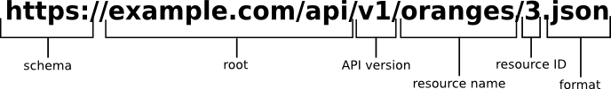

Future of ChEMBL
webservices
Michał Nowotka
ChEMBL Group
EMBL-EBI
What has been done so far?
Technology switch
- Java -> Python
- Spring -> Django
- ORM made WS database agnostic
- WS shipped with myChEMBL (RDKit + PG)
- We can open the source code now
Consequences
- Web services are easier to maintain and deploy for US
- What about our USERS?
- WHO are our users?
- Code developers - just like us!
Are webservices easy to use
by developers?
Which programming languages are supported?
- This is REST API so every language is supported!
- Not exactly...
- Web application security model implemented in web browsers defines same origin-policy
- Java Script code outside EBI domain can't call WS directly
- We support JSONP and CORS now
Very nice! But what are architectural constraints
of RESTFul API?
- Client-server

- Stateless
- Cacheable
- Layered system
- Uniform interface
And what is the most important feature
of the RESTFul API?
Uniform interface, which manifests itself in:
URI!
(Uniform Resource Identifier)
The uniform interface constraint is fundamental to the design of any REST service. The uniform interface simplifies and decouples the architecture, which enables each part to evolve independently.
URI?
- string of characters used to identify a name of a web resource
- simple
- fixed
- self descriptive
- self documenting - HATEOAS
URI?

Web resource?
A primitive, fundamental element of web architecture.
Web resources in ChEMBL WS:
- Compound
- Target
- Assay
- Bioactivity (not currently)
- Image (not currently)
- Drug Mechanism (not currently)
- Form (not currently)
HATEOAS?
Hypermedia as the Engine of Application State
- A REST client enters a REST application through a simple fixed URL.
- All future actions the client may take are discovered within resource representations returned from the server.
So what's wrong with URIs in our WS?
- Redundancy
- Lack of consistency
- Not too flexible
- Not conforming to standards and thus hard to guess
Redundancy in the identifier type
Wrong:
Right:
- compounds/CHEMBL1
- compounds/QFFGVLORLPOAEC-SNVBAGLBSA-N
- compounds/CCCCCC
Identifier's form can be used it distinguish it's type.
Redundancy in ChEMBL ID
Wrong:
- compounds/CHEMBL1 - returns 200
- ... but compounds/1 - returns 400
- Invalid Chembl Identifier supplied: 1
Right:
- compounds/1 is equivalent to
- compounds/CHEMBL1
still can be distinguished from SMILES and inchi key
Redundancy in resource type
Wrong:
Right:
- bioactivities/CHEMBL2
- bioactivities/CHEMBL240
- bioactivities/CHEMBL1217643
In order to get bioactivity data I have to know entity type - why???
Redundancy in resource type
This type of redundancy is especially unpleasant:
- No ability to loop over ids
- To get data you need to know a piece od this data
- This is not a canonical URI
- Bioactivity should be resource on it's own
Lack of consistency
There is an URI to get all targets in ChEMBL: https://www.ebi.ac.uk/chemblws/targets
But there is no URI to get all compounds or assays...
WHY?
Lack of consistency
- There is 9,414 targets currently in ChEMBL, which is about 5MB when saved as xml.
- But there is 1,566,998 compounds and 1,042,374 assays...
- Gigabytes of data in single request
- Potential DDOS threat
- And the solution is...
Pagination
Filtering
- Pagination is nice but I don't need all compounds
- Only compounds with alogp greater than 5.3 and 4 rotatable bonds
compounds?alogp__gte=5.3&rotatable_bonds=4Acidin namecompounds?preferredCompoundName__icontains=acid- Similar for all other resources
Benefits of filtering
- Reduces amount of data only to interesting items
- Batch retrieval without specifying a list of ids
- Easy to cache
- Easy to implement
- Makes webservices almost as flexible as SQL
Lack of consistency - continued
- Different bioactivities field names for json and xml
- https://www.ebi.ac.uk/chemblws/assays/CHEMBL1217643/bioactivities.xml
- https://www.ebi.ac.uk/chemblws/assays/CHEMBL1217643/bioactivities.json
- Very problematic when generating cache
- Kept for legacy reasons
Lack of consistency - GET and POST
- In POST, data is not embedded into URI
- Using POST is the only way for SMILES containing URI unsafe characters
- This is why all 3 API methods requiring SMILES (compound by SMILES, substructure, similarity) support POST
- But others don't - why?
- Let's give the user decide
Conforming to standards - POST arguments
- Support for
x-www-form-urlencodedPOST arguments should be dropped - In early days of Web POST was used to send data from online forms
- Special encoding called
x-www-form-urlencodedwas designed for that purpose - REST API uses POST in different context
Conforming to standards - POST arguments
- Modern REST APIs don't allow
x-www-form-urlencoded - The rule is: you get your data encoded in format in which your POST arguments were encoded
- This means that only json and xml should be supported in our case
- Currently we accept
x-www-form-urlencodedby default and use'Accept'and'Content-Type'to get around some problems
To keep URIs simple we should have new kinds of resources:
- Image
- Bioactivity
- Compound Form
- Mechanism of Action
- Approved Drug
- Similarity
- Substructure
New kinds of resources:
- compounds/CHEMBL2/image -> images/CHEMBL2
- targets/CHEMBL240/bioactivities -> bioactivities/CHEMBL240
- compounds/CHEMBL278020/form -> form/CHEMBL278020
- compounds/CHEMBL1642/drugMechanism -> drugMechanisms/CHEMBL1642
- compounds/substructure/CCCCC -> substructure/CCCCC
- compounds/similarity/CCCCC/70 -> similarity/CCCCC?simscore=70
Conforming to standards - HATEOAS
- Having flat resources SPORE endpoint can be generated automatically
- Current SPORE endopint is written by hand because it's faster
- We use SPORE to generate JavaScript based live documentation
- This documentation is shipped with myChEMBL
- It should be presented on webservices index page
- This would be a nice example of using ws from js
- Proof we have CORS up and running
Other useful things
- Make webserices code open source and available on github
- Everyone can have it's own ws instance even without myChEMBL
- Github excellent issue tracking
- Community support
Include Beaker in webserives
- So far ws only serve data
- Tandem with beaker would add ability to manipulate with compounds
- Still free and open source
- Ability to create web and mobile apps without installing software
Add vector formats for images
- More web friendly
- Smaller
- Better quality
- Interactive
How much work is this?
- Most of the features described are already implemented in our other apps
- Some of them are simply commented out from ws code to maintain backwards compatibility
- Very small amount of development required
- Still needs to be carefully tested
- Won't break anything (v2)
Thank you!
Questions?